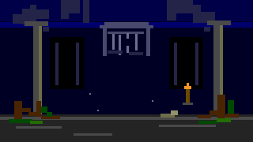
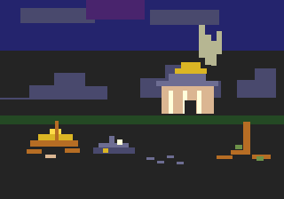

FIG. 01 THE ESTATE UNDER SIEGE — 320×224 PLACEHOLDER COMPOSITION
This is not a presentation deck, a game launcher, or an image-generation service. It is the house standard: a stable reference to hand to future collaborators, tools, and projects.
I · THE CHARTER01
Not a ruin. Not a victory.
A functioning aristocratic order under pressure.
The Estate Under Siege is the image of an old world that has not yet surrendered. Its manor remains imposing. Its gardens remain ordered. Its chapel and village still belong to a wider social whole. But one wing is neglected, stone is weathered, roots are lifting the oldest foundations, and the storm is gathering beyond the trees.
The visual language joins Romanticism, Gothic Revival, and Neoclassicism. The Organic Society is the underlying sensibility: relationships between land, institution, inheritance, work, and obligation. It is expressed through composition and material culture, never through blunt propaganda.
“The estate must look worth preserving. Its vulnerability is what gives it meaning.”
The registers are complementary. One leads each asset; the others support only when the subject calls for them.
B · LEADING REGISTER
IDENTITY · UI · PORTRAITS · HERALDRY
Estate of the Crown
Authority made architectural.
Monumental neoclassical manor, deliberate axes, formal gardens, classical statuary, oak avenues, aged heraldry, gilt frames, oxblood controls, and stone plates. It is the primary register for the site's identity and formal presentation.
Guard against: immaculate grounds, bright uniform windows, pristine stone, and an excess of gold. The estate is maintained, not celebrated.

A · SUPPORTING REGISTER
LORE SCENES · DIVIDERS · MEMORY
The Last Abbey
What remains after certainty.
Broken Gothic interiors, ruined cloisters, moss, dust, fractured tracery, ancient roots, and a single point of amber light. Use it for lore scenes, historical memory, and devotional melancholy.
Guard against: generic haunted-house horror, total collapse, and decorative ruin with no sense of institutional life.

C · ACCENT REGISTER
ESSAYS · SYMBOLIC PROPS · PHILOSOPHICAL BEATS
The Broken Measure / Rootbound
The limits of the measuring hand.
Storm-dark ridges, ancient sanctuaries, broken sundials, damaged compasses, severed chains, and woodcut-block dithering. This is the most abstract register and should appear with intention.
Guard against: occult clichés, magic effects, fantasy runes, and symbolic objects that have no source or purpose.
III · THE TECHNICAL COVENANT03
Pixel discipline, not pixel garnish.
When an asset is described as Genesis-style, its construction must respect the chosen hardware vocabulary. A filter over a large illustration does not qualify.
Master color modelRGB333 · 3 bits per channel · 512 possible colors
Rendering bansNo anti-aliasing, subpixel rendering, blur, gradients, or painterly texture
!
Hardware correction.
The working canvas is 320×224, matching the standard 40×28 tile field. Preserve the full 320×224 frame for Genesis-style assets; do not crop it to a web-only aspect ratio when the brief calls for hardware-faithful composition.
Primary interface bank. Oxblood controls, aged parchment, bone text, gilt borders, and restrained moss interaction states.
P3
Accent & Symbol
Moss · cold iron · rare amber
Amber is the single designated candle color. Use it for a distant flame or one inhabited window, not general decoration.
Palette discipline: these are four distinct palette lines, not one 64-color bucket. A tile selects one line. The complete HEX / RGB333 / CRAM mapping is in the source table.
The first atlas is a 96-tile reference plan: eight columns by twelve rows, each tile 8×8. It establishes a material vocabulary future artists can extend without inventing a new visual language for every object.
Field, aged texture, edges, and corners for UI panels.
These are planned tile definitions, not a finished production tileset. Index, palette, flip restrictions, and intended use belong in the eventual tile manifest.
Headings, titles, and selected formal labels. Use sparingly enough to preserve their authority.
READING · EB GARAMOND
A house is known not only by the stone it raises, but by what it preserves, what it repairs, and what it allows to fall into neglect. The record must remain legible after the ornament has done its work.
Body copy, lore, annotation, instructions, and long-form reading.
MICRO LABEL · PRESS START 2P
FOLIO 04 ARCHIVE ENTRY RGB333 / 4BPP
Use only for brief labels. Never set long paragraphs in this face.
✦◇✦
Heraldic borders, hard 4px rules, gilt corners, broken-chain dividers, and parchment or stone plates are required when they serve material character or hierarchy. The point is not minimalism. The point is disciplined density.
VII · THE ADAPTATION DOCTRINE07
The style travels. The subject stays itself.
The Codex must work for games that do not take place in an estate, a monastery, or any medieval world.
CASE 01
THE TRANSFER TEST
Todd's Solitaire
A solitaire game does not need a castle, an abbey, or aristocratic lore. It can inherit the Codex through aged card stock, heraldic card backs, a dark playing surface, oxblood selection states, restrained gilt, and the house typography. The cards and their readability remain the subject.
This is the test: recognizable house style, unchanged project identity.
Subject supplies
Game rules, character facts, world, period, mechanics, and required information.
Codex supplies
Material, palette, typography, composition, atmosphere, visual hierarchy, and ornament.
Function decides
Clarity, input feedback, accessibility, board readability, and interaction speed.
The Codex governs presentation. It does not authorize an AI to fill gaps in lore with plausible-sounding facts.
Explicit current instructionProject owner's latest direction.
Designated canonLore bible, character bible, and approved project source.
Approved referencesLocked sheets, source documents, physical descriptions, and reference images.
Previously approved workAccepted assets and recorded decisions.
The Estate CodexPresentation standard only; never a source of project facts.
AI inference and proposalsNon-canonical until explicitly accepted.
!
Label the difference.
Every important output should distinguish established fact, reasonable interpretation, creative proposal, and unresolved detail. If the source does not specify a book, date, lineage, real person, or physical feature, do not invent one and attribute it to canon.
Start a new project by providing the Codex website, the relevant source documents, and the appropriate task prompt. The handoff tells the AI what the style controls and what it does not.
MASTER HANDOFF · SHORT FORMREADY TO COPY
You are working under The Estate Codex. Read the website and the supplied reference documents before creating anything.
The source material governs identity. The house style governs presentation.
Preserve the project's lore, character facts, physical descriptions, mechanics, and functional requirements. Do not rewrite the subject to make it fit the aesthetic. Separate established facts, interpretations, and creative proposals. Never invent missing facts and attribute them to the source.
Apply the Estate Under Siege visual language: Romanticism, Gothic Revival, and Neoclassicism; aged stone, iron, parchment, oxblood, restrained antique gold, deep evergreen, deliberate hierarchy, material texture, and melancholic dignity. The estate is a functioning order under pressure, neither ruin nor triumph.
For Genesis-style assets, use RGB333, four 16-entry palette banks, 4bpp, 8×8 tile discipline, hard-edged shading, chunky intentional dithering, and nearest-neighbor scaling. No anti-aliasing, blur, smooth gradients, painterly texture, or high-resolution art disguised as pixel art. 320×224 is the Codex Genesis internal resolution and the target 40×28 tile field.
Choose the leading register, explain the treatment, preserve the subject's identity, and deliver a copy-ready prompt or production brief with technical constraints and negative instructions. Do not claim to have generated or tested anything unless you actually have.
MASTER PREFIX (always include for image generation):
authentic Sega Genesis / Mega Drive 16-bit pixel art, 320x224 internal
resolution, nearest-neighbor upscaled, 9-bit RGB (3 bits per channel,
512 colors total), 61 colors onscreen max (4x16 sub-palettes +
transparency), 8x8 tiles, no anti-aliasing, no subpixel rendering, no
gradients, no blur, hard-edged shading, chunky checkerboard or
woodcut-block dithering. Palette locked: charcoal #242424, midnight
#24246D, cold iron #6D6D92, mystic violet #49246D, limestone #DBB692,
warm stone #DBB692, parchment #FFDBB6, bone #FFFFDB, antique gold
#DBB624, oxblood #6D2449, bronze #B66D24, deep evergreen #244924,
moss #6D9249, amber #FFB624. Counter-Enlightenment High Traditionalism,
[ASSET MODIFIER]. NEGATIVE: no anti-aliasing, no gradients, no blur,
no 3D render, no photoreal, no digital painting, no modern minimalism,
no neon, no cyberpunk, no anime, no chibi, no lens flare, no excessive
colors, no cute, no sci-fi, no text artifacts, no soft shadows, no
vector-clean shapes, no subpixel rendering.
ASSET MODIFIERS:
Hero art: 16:9 wide pixel-art key art, estate under siege, monumental
neoclassical manor at dusk, symmetrical wings, oak avenue, formal
gardens, one neglected wing, broken chain at garden edge, storm
gathering at pediment level, broad low-detail dark area on LEFT THIRD
for headline overlay, reads clearly at 200px wide.
Character portrait: 128x128 pixel-art bust portrait, 3/4 view, stern
aristocratic face, ornate collar, corrupted heraldic gilt frame with
one chipped corner, 3-color rim light, oxblood and antique gold accents,
dark stone background, readable silhouette at 32px.
Sprite: 64x96 pixel-art character sprite, 3/4 side view, idle and walk
frames, readable silhouette, 16-color sub-palette, hard pixel clusters,
4px contact shadow.
Lore scene: 320x224 cinematic pixel-art scene, layered parallax, ruined
Gothic abbey interior, ancient oak roots splitting stone, broken rose
window, moss and dust, single amber candlelight in a distant arch,
devotional melancholy, reserved darker negative space for text.
Philosophical accent: 320x224 pixel-art scene, storm-dark ridge,
ancient stone sanctuary, shattered bronze sundial and broken compass
in the foreground, severed iron chain, woodcut-block dithering, pale
golden light breaking through cloud, low-detail dark negative space
for text.
Website UI: dark parchment-and-stone interface, 4px hard pixel borders,
antique-gold filigree corners, oxblood buttons, bone text, moss-green
hover states, image-rendering: pixelated, no gradients, heraldic tab
navigation, character-card grid, lore-panel layout.